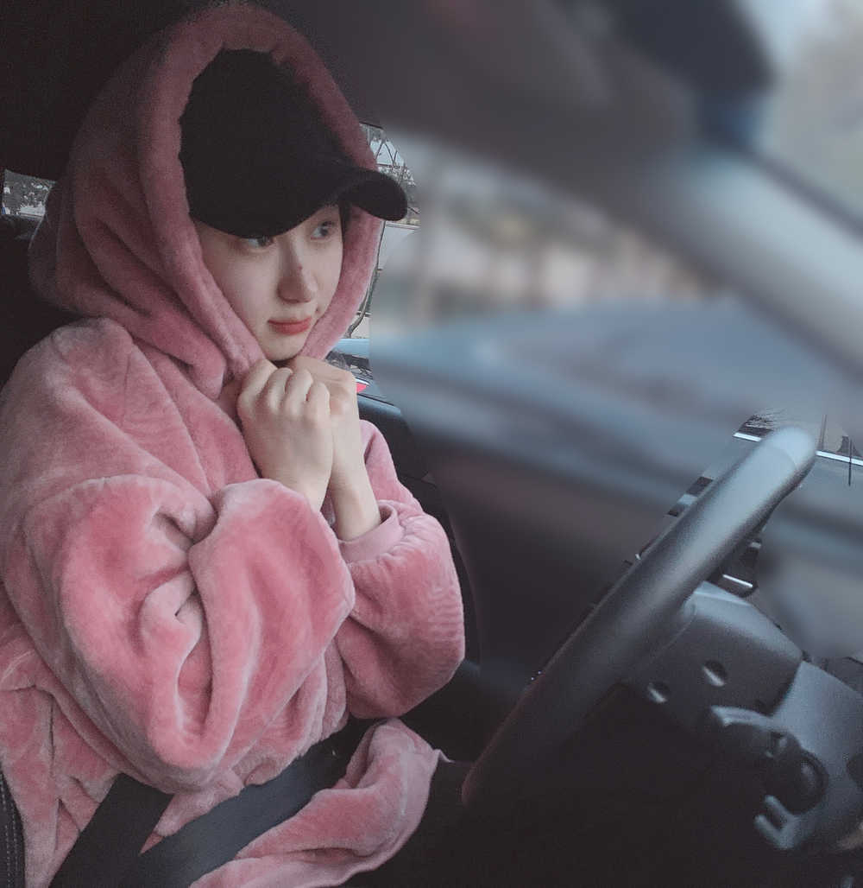
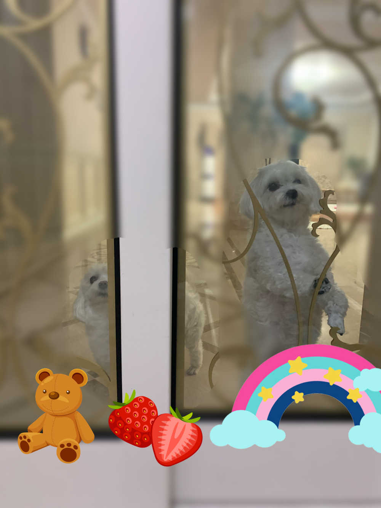
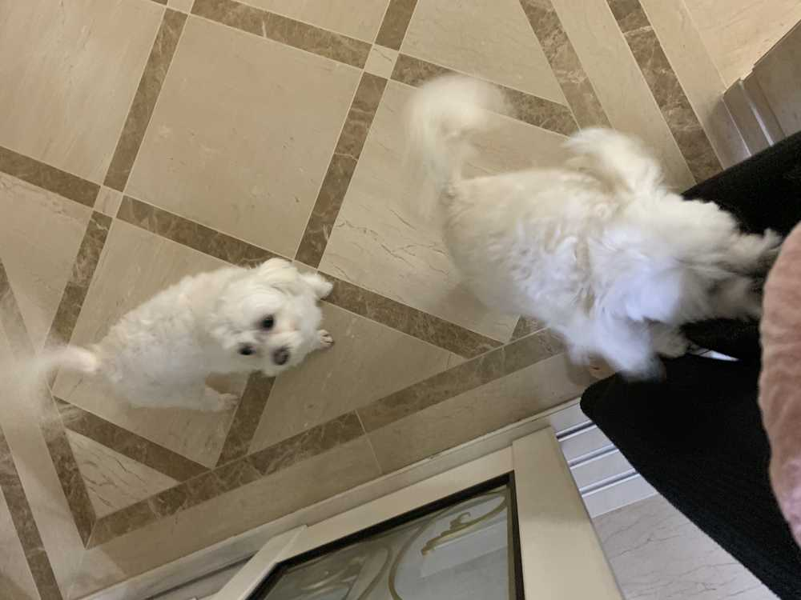

아빠랑 같이 잠깐 분당에 갔다왔어요~~~~
바람도 살짝 분당💨
ㅎㅎㅎㅎㅎㅎㅎㅎㅎㅎㅎㅎㅎㅎㅎ

집에서 아빠회사
집에서 영통
집에서 분당
이제
집에서 숙소??????🌝 '희망사항 입니다'
사촌동갑은 전화해보니까 아주
신나게 서울 왔다갔다도 하구
그렇게
나이스하게
잘 몰고 돌아와서 나를 반기는 건


역시 우리 아가들
우쭈쭈쭈 해주고 있어요~~💕
이호!!
일요일 알차게 잘 보내고 계신가아?
충전하는게 제일 알찬 거죠 역시👍🏻
행복하고? 배부르고? 재밌고?
고럼고럼 !!❤️
뒹굴뒹굴이 짱이여~~ 나두 이제까지
음 뭐했더라
I had some supper from 3 to 5 pm.
I went to Bundang where my auntie lives.
이호~~~이제 뭐할 거예요???ㅎㅎ
[As for me / In my case]
=어떤 표현이 좋은 거지..?
영어쌤에게 물어봐야겠어요....🤔
I want to take a rest first.
I’m going to do the homework at 9 o’clock. When I finish reviewing the lessons from a few days ago.
I’ll make a phone call to my sister.
화이팅!!!!